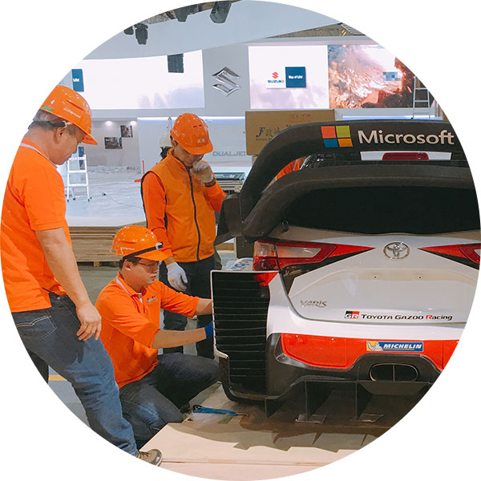

About G-Yi
G-Yi Logistics is the affiliate of Taiwan's Eurotran Expo Service Co., Ltd., a vibrant professional group with plentiful experience performing on-stop logistics and on-site services for international expositions. We have served nearly a hundred well-known domestic and international expositions, including the Kunshan Electronics and Electrical Equipment Show (KE Show), the Maanshan Electronics Expo, the Changsha Electronics Expo, the Taipei International Machine Tool Show (TIMTOS), Taipei Cycle, and COMPUTEX TAIPEI.
G-Yi has service centers in Shanghai and Taipei, and partners located around the world. Our dedicated, integrated local service network gives exhibitors convenient, quality, and secure one-stop, comprehensive exhibit logistics services.

- 